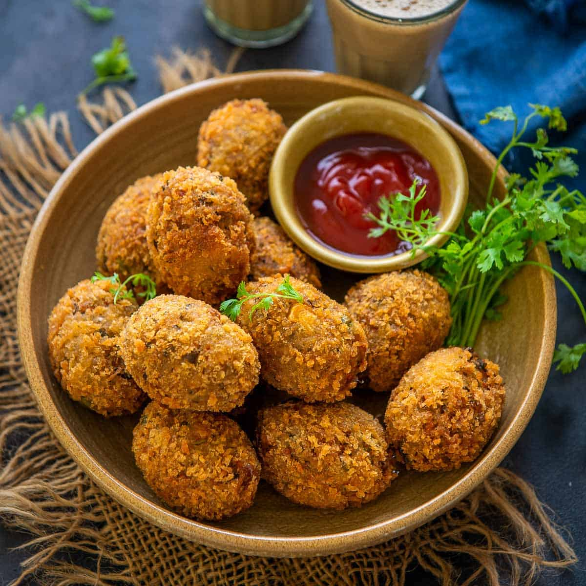
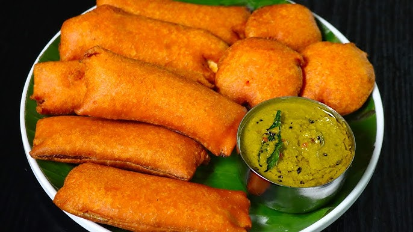

Revolutionizing Tea Buisness With Our Own Authentication blends and Unique Franchise Model.
TEATime
Revolutionizing Tea Buisness With Our Own Authentication blends and Unique Franchise Model.
Tea Time is a tea franchise chain in India with over 1,500 outlets in Tamil Nadu. Here's some information about the history of Tea Time in Tamil Nadu: Growth Tea Time started with 10 stores in 2017 and has since established over 1,000 outlets in Tamil Nadu. Founder Uday Srinivas Tangella is the founder and managing director of Tea Time. Tangella spent a year researching and perfecting a tea blend from various teas. Vision Tangella's vision is to empower the common class population and bridge the gap between the accessibility and affordability of premium quality products
Tea is the second most popular drink in the world, after water. It's especially popular in Asia, the United Kingdom, and the Middle East. There are many types of tea, including black, green, and herbal teas. Herbal teas are made from other plant parts, such as chamomile, rosehip, or rooibos

Juice provides nutrients such as carotenoids, polyphenols, and vitamin C that offer health benefits. High consumption of fruit juice with added sugar may be linked to weight gain, but not all studies have shown this effect. If 100% from fruit, juice can help meet daily intake recommendations for some nutrients.
The digestive biscuit and rich tea have a strong identity in British culture as the traditional accompaniment to a cup of tea and are regularly eaten as such. Some tea drinkers dunk biscuits in tea, allowing them to absorb liquid and soften slightly before consumption.
Similar to milk smoothie, milkshakes are also blended cold dairy beverages. It is usually prepared by milk, ice cream or iced milk, emulsifier and/or stabilizer, and flavorings or sweeteners (e.g., fruit syrup or chocolate sauce). Milkshake contains ice cream unlike milk smoothie.

We provide Organic Fresh Oil Less Samosaa in our Tea Time Shop,its pure veg , it consist wheet , maida, potatos and onions ..
We provide Organic Fresh Oil Less Samosaa in our Tea Time Shop,its pure veg , it consist wheet , maida, potatos and onions ..
We provide Organic Fresh Oil Less Samosaa in our Tea Time Shop,its pure veg , it consist wheet , maida, potatos and onions ..
We provide Organic Fresh Oil Less Samosaa in our Tea Time Shop,its pure veg , it consist wheet , maida, potatos and onions ..
